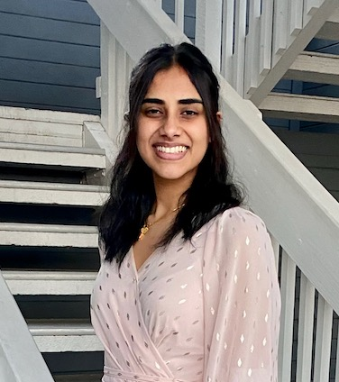

Timothy Brown, PhD
Principal Investigator
Timothy Brown
Timothy Brown, PhD, MA, is a health services researcher who has recently published work showing the specific biological, psychological, and social factors that predict future chronic pain; the causal impact of reductions in psychological distress in eliminating low back pain; and how discrimination can result in chronic pain. He is a faculty member in the Division of Health Policy and Management in the School of Public Health at the University of California, Berkeley.

Cindy Liu
Student Researcher
Cindy Liu
Cindy is a third-year at UC Berkeley studying English and Public Health. She's passionate about health equity and improving chronic pain for underserved communities. In her free time, you can catch her dogspotting around Berkeley or doing art.
Megan Yip
Student Researcher
Megan Yip
Megan is a third-year at UC Berkeley studying Public Health on the pre-optometry track. She’s passionate about preventative health and sustainable practices. In her free time you can find her crocheting or hiking on the Fire Trails.
Calista Oliveira
Student Researcher
Calista Oliveira
Calista is a third-year at UC Berkeley studying Public Health and Education. She is passionate about developing sustainable solutions to promote good health and quality of life for all people. When it is time for a break, you will find her sailing around San Diego Bay or playing board games with her family and friends.

Jasneet Bajwa
Student Researcher
Jasneet Bajwa
Jasneet is a 3rd year studying Molecular and Environmental Biology with a minor in Global Poverty and Practice at UC Berkeley. She is passionate about providing equitable access to healthcare especially to underserved communities. In her free time. you can spot her running around Berkeley, hiking, or watching anime.